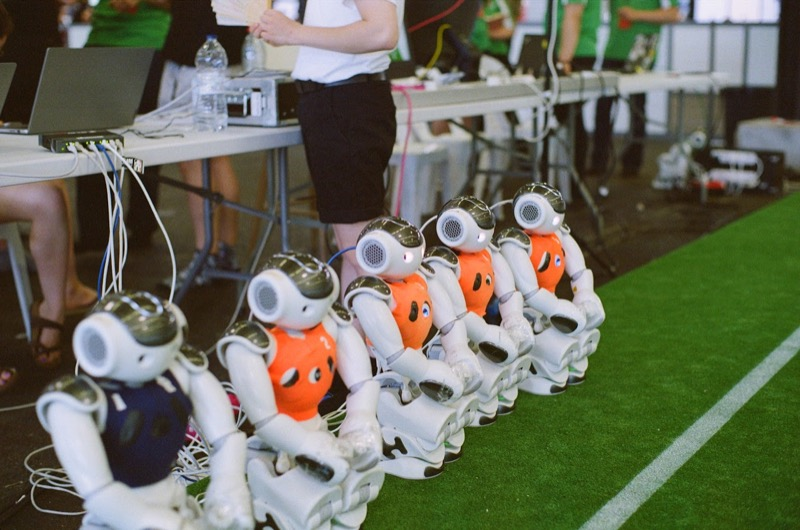

Dutch Nao Team: RoboCup Standard Platform League

Summary
The Dutch Nao Team is UvA's entry in the RoboCup Standard Platform League, where teams compete with identical NAO humanoid robots to play football fully autonomously. My primary role was as an ML engineer, working on AI features like pose classification, ball detection, whistle detection, and jersey detection. I also served as project manager and vice chair, handling team vision, project planning, and leading the writing of the technical report.
The major effort in 2022-2023 was building Yggdrasil, an entirely new robot framework written in Rust. Designed for continuity, extensibility, and developer experience, the goal was to provide the SPL community with a modern, low-barrier-to-entry framework. The team competed at GORE 2023 (6th place) and RoboCup 2023 in Bordeaux (4th place in the Challenge Shield, 1st place in the data minimisation challenge).
Yggdrasil Framework
- Tyr: Dependency injection and parallel execution. A system-based architecture where robot subsystems are defined as functions over shared resources. Systems run once per LoLA cycle, with automatic scheduling via a directed acyclic graph that enables future parallelisation.
- Nidhogg: Abstraction layer. Built on top of Aldebaran's LoLA software, providing intuitive data structures for robot control. Supports multiple backends (LoLA, MuJoCo, Bullet) so the framework can run seamlessly in simulation.
- Bifrost: Networking. A packet encoding/decoding library based on protocol buffers with Rust derive macros. Variable-length integer encoding helped win 1st place in the data minimisation challenge (3.35 bytes per robot-second).
- Heimdall: Camera library. V4L-based camera interface for the NAO's dual HD cameras, working directly with YUYV images for performance.
- Sindri: Build tool. A CLI for building, deploying, and scanning robots with single commands.
- Mimir: Debug panel. A web-based panel (built with Dioxus) for real-time visualisation of walking engine parameters, camera feeds, and vision algorithm overlays via WebAssembly.
Competition Results
| Event | Result |
|---|---|
| GORE 2023 (German Open Replacement Event) | 6th place |
| RoboCup 2023 Bordeaux — Challenge Shield | 4th place |
| RoboCup 2023 Bordeaux — Data Minimisation Challenge | 1st place |